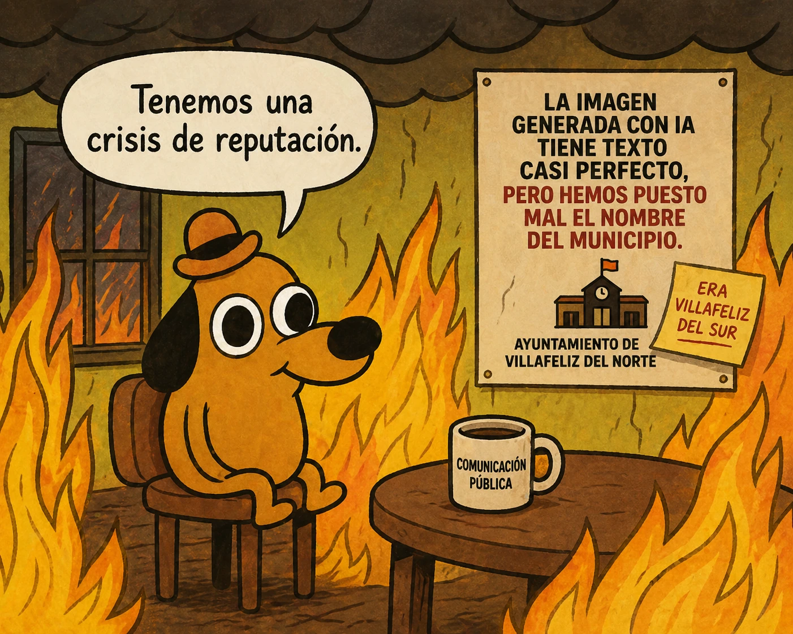

estrategIA #135 ·
La textura perfecta, el municipio equivocado
El contexto
El perro entre llamas traslada la crisis al equipo de comunicación pública. La imagen puede estar bien resuelta y contener un error esencial: el nombre del ayuntamiento. La broma recuerda la importancia de revisar el contenido.
Publicado en: estrategIA #135 — De Nano Banana Pro a ChatGPT Images 2.0: el salto de la IA visual en la comunicación política y de gobierno
Leer el texto de la imagen
Tenemos una crisis de reputación. LA IMAGEN GENERADA CON IA TIENE TEXTO CASI PERFECTO, PERO HEMOS PUESTO MAL EL NOMBRE DEL MUNICIPIO. AYUNTAMIENTO DE VILLAFELIZ DEL NORTE ERA VILLAFELIZ DEL SUR COMUNICACIÓN PÚBLICA